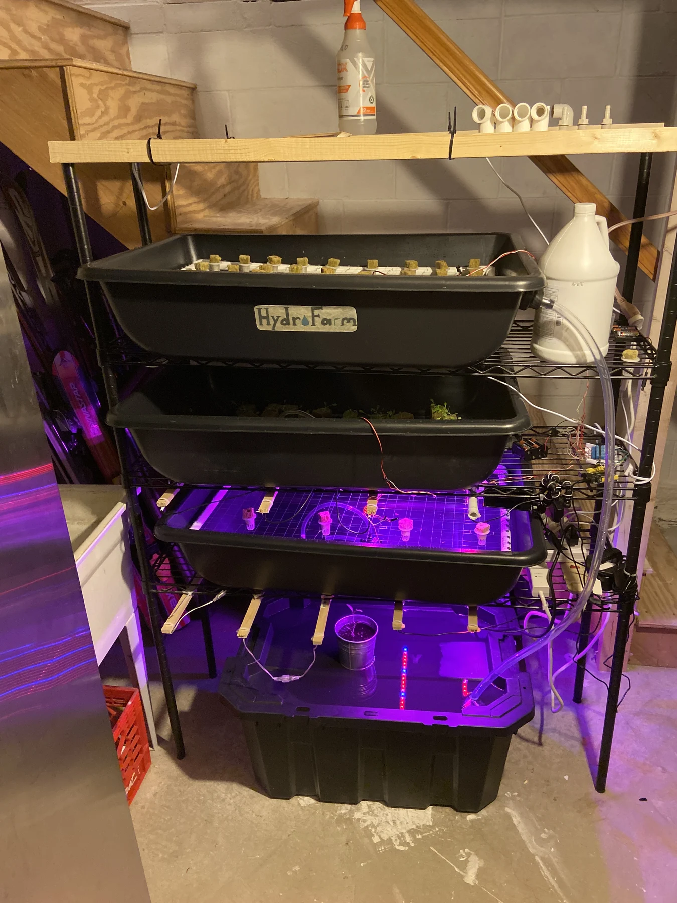

Industrial robotic vacuum
A school-scale robotic vacuum with a custom 3D-printed cyclone assembly.
From lettuce in repurposed containers to shelves of automatically watered microgreens.

An early interest in hydroponics led me to build growing systems at home. I started with lettuce under LED lights in repurposed containers, then gradually expanded the scale and automation.
The later system used pine shelving and trays of microgreens. An Arduino controlled watering, the grow lights ran on a 16-hour cycle, and newly planted trays began in a dark incubation box.
Unlike a mechanism that can be switched off between tests, the plants needed consistent care. The project connected physical construction, basic electronics, and the practical challenge of keeping a system running.
Select any photo to open the full-size gallery.


A school-scale robotic vacuum with a custom 3D-printed cyclone assembly.
A Raspberry Pi arcade cabinet built with my brother from inexpensive wood and a repurposed monitor.